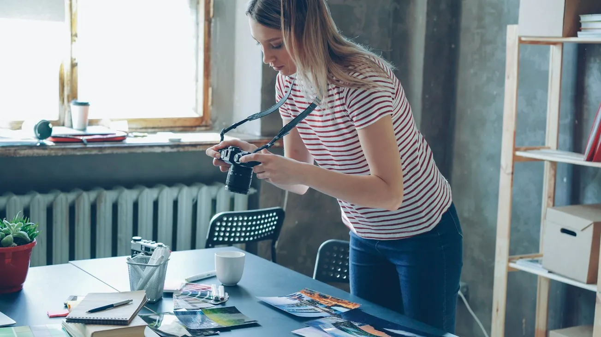
The Tactile Nature of Film in a Digital Age
Why medium format analog stocks still dictate our deliberate pace, exposure discipline, and tonal benchmark on commercial campaigns.
READ DISPATCHDispatches from the field, notes on craft, technical essays, and reflections from behind the camera.
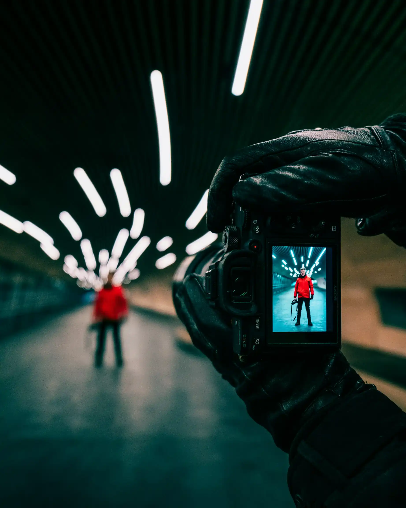
Exploring how stripping away color focuses the gaze on bone structure, emotional vulnerability, and the interplay between light and deep shadow in contemporary studio portraiture.
When color is removed from a scene, the portrait ceases to be a record of chromatic appearance and transforms into a meditation on form, geometry, and intimacy.
READ ESSAY
Why medium format analog stocks still dictate our deliberate pace, exposure discipline, and tonal benchmark on commercial campaigns.
READ DISPATCH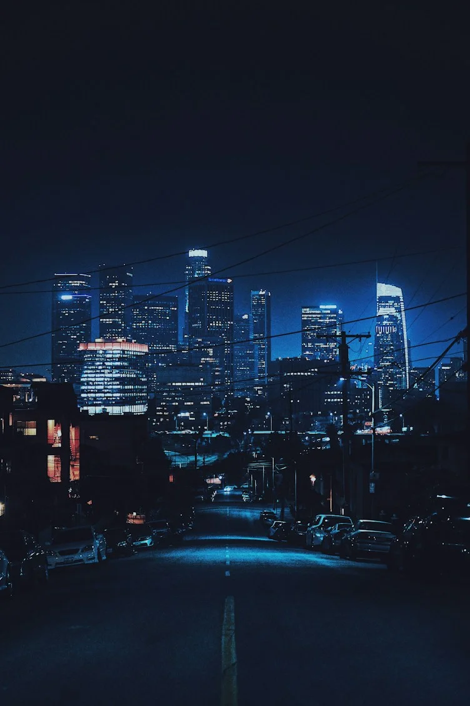
Capturing the neon silence and nocturnal geometry of Shinjuku between dusk and rain with high-ISO sensor calibration.
READ DISPATCH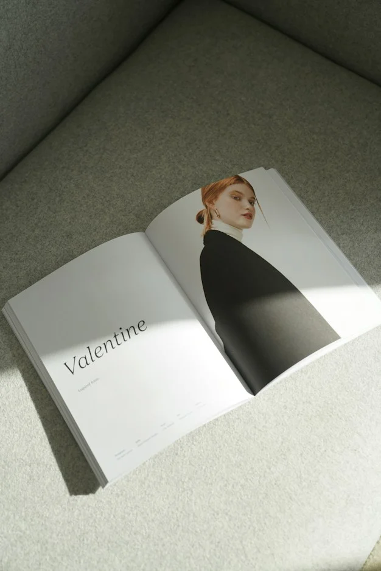
From sequencing prints to selecting linen cloth bindings: crafting an enduring physical artifact in an era of ephemeral screens.
READ DISPATCHBalancing continuous HMI fixtures with high-speed studio strobes on multi-format commercial sets for seamless hybrid deliverables.
READ DISPATCH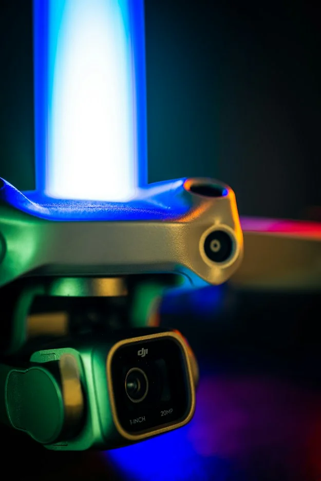
Embracing optical aberrations, spherical flares, and romantic micro-contrast in modern editorial campaigns.
READ DISPATCHA month-long exploration of coastal geology, salt air, and terracotta warmth across the Ligurian and Amalfi cliffsides.
READ DISPATCH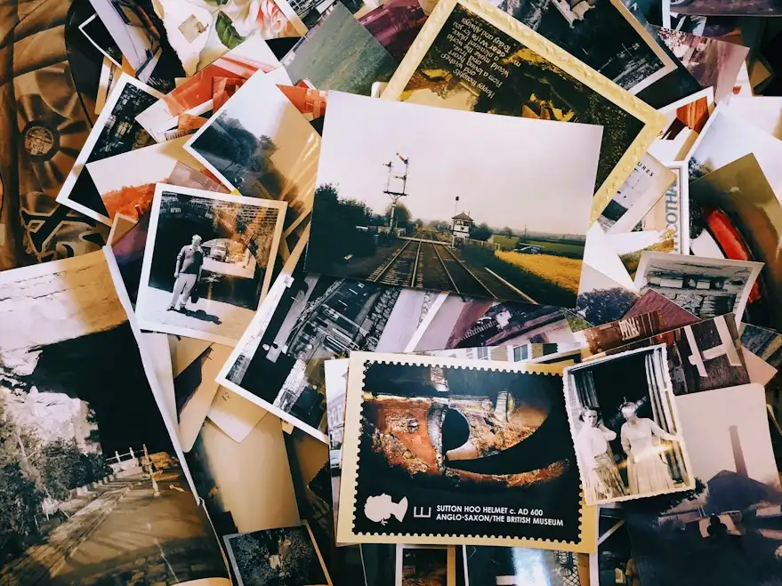
How distilling five thousand frames into thirty creates emotional cohesion, ruthless rhythm, and lasting narrative clarity.
READ DISPATCH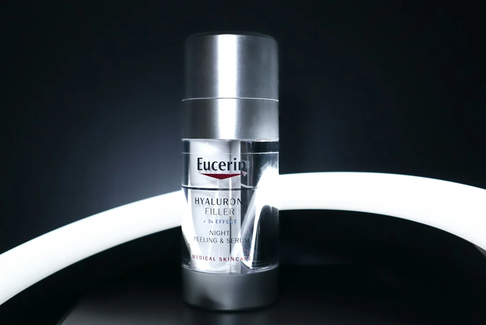
Using linear polarizers, black velvet flags, and giant soft diffusion frames to sculpt transparent liquid vessels with surgical precision.
READ DISPATCH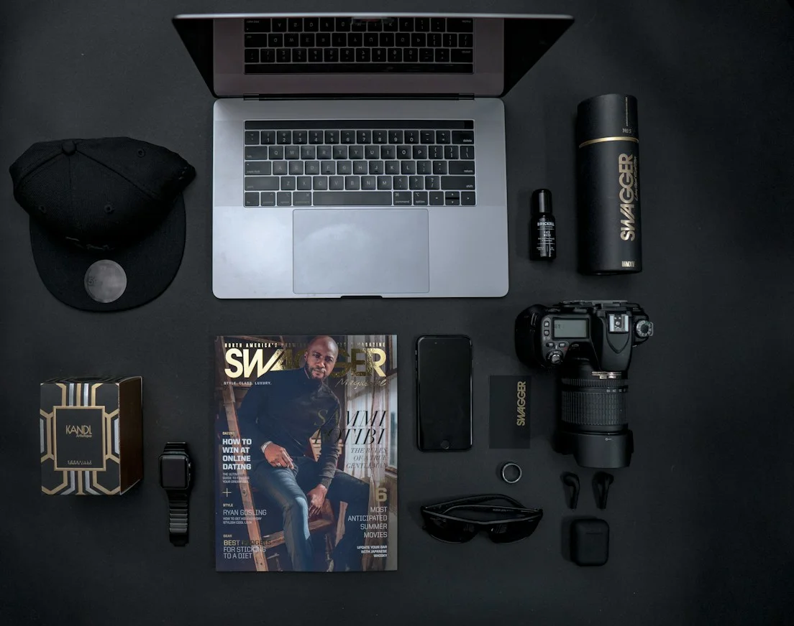
A comprehensive walkthrough of every prime lens, circular polarizer, rugged SSD, and dual-voltage power bank packed for international shoots.
READ DISPATCHUnfiltered glimpses from editorial sets, location scouting, test shoots, and studio life.
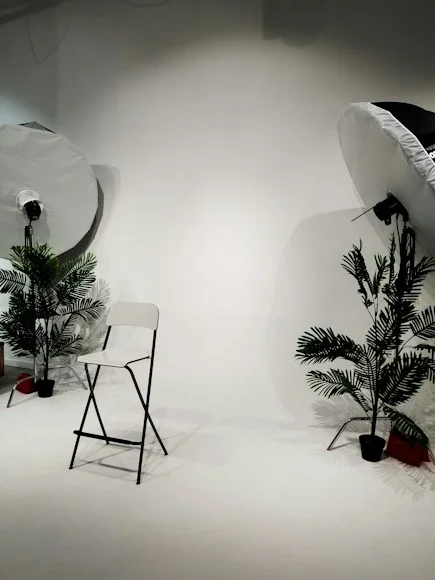
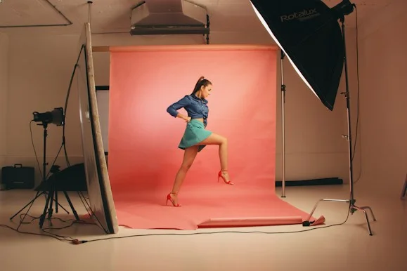
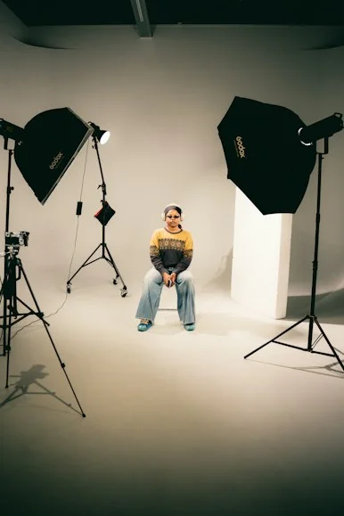
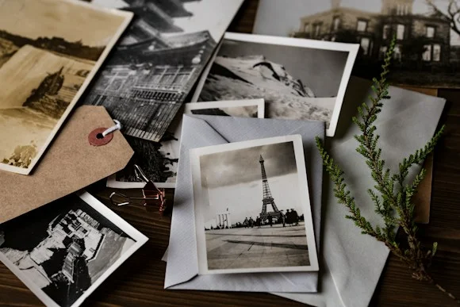
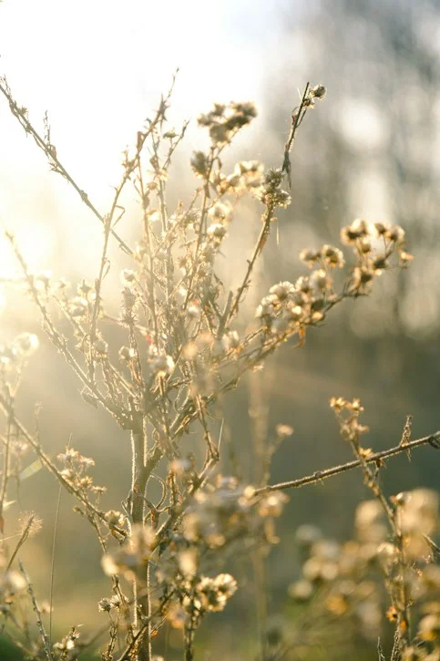
Warm evening backlight filtering through coastal meadow grass, exploring ephemeral highlights and optical flares.
Curved glass facades and sky distortions across modernist architecture in Rotterdam and Copenhagen.
Phosphorescence, deep ocean currents, and long-exposure surface tension captured under moonlit skies.
Planning for sub-zero temperatures, battery life preservation, and packing medium format digital gear across rugged tundra terrain without vehicle access.
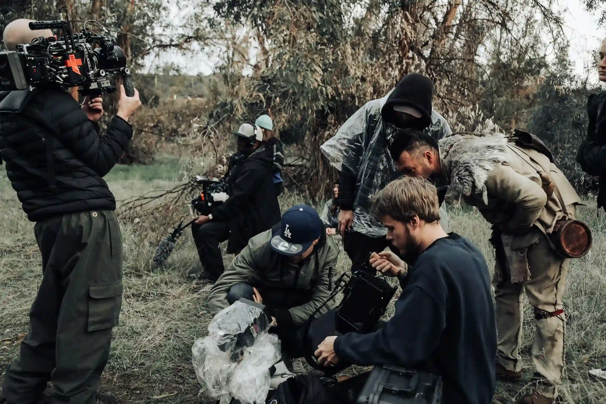
Hasselblad and Phase One high-resolution camera systems paired with prime lenses for unmatched tonal nuance and micro-contrast.
Broncolor Siros and Scoro power packs providing repeatable microsecond flash stability and consistent color temperature.
Eizo ColorEdge 4K monitors hardware calibrated to Adobe RGB 1998 standards for live client review and real-time color approval.
Hahnemühle fine art baryta papers paired with twelve-color pigment inksets for lifetime museum-grade permanence.
35mm and 6x7 medium format mechanical film bodies reserved for specialized artistic commissions and monograph releases.

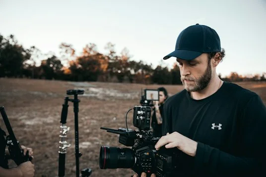
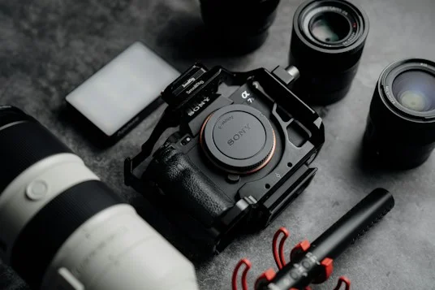
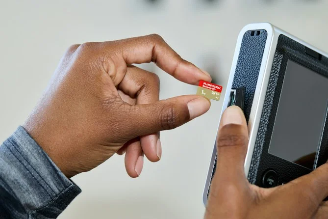
We accept a limited number of commercial and editorial commissions each season to ensure undivided attention and the highest level of craft.